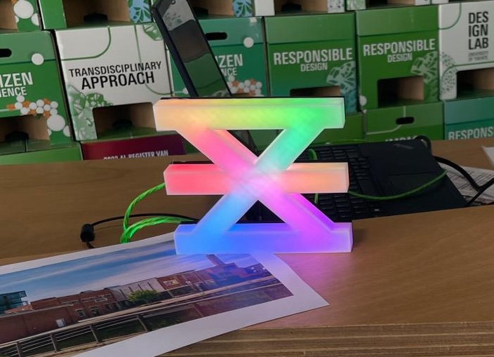

Brief
Enschede Promotie approached
Creative Technology students with the intention of transforming
the tourism experience, and align its values with its presentation
After a meeting with the client, in a team of 6 students, we created
a proposal for a pervasive game that allowed tourists to explore the
city's landmarks in a techonlogy forward manner.
Our efforts culminated in what we called waypoints, devices that
tourists would use to "capture" a landmark, and a general map of
the area would show what user had claimed whhich landmark

Problem Definition
After our initial conversation with the client, we discovered that
this project was part of a larger goal of redefining the city as
a culturally rich yet innovative and creative environment.
We counducted an internal story boarding session where the team
highlighted what we thought the problem with the current user flow
was.
We discovered that a majority of the team felt friction with
the flow of discovering a city. Some used social media, or other
platforms to find activities in foreign cities.
Ideation
The team decided to pursue the creation of a dedicated way of
interacting with a city through technology.
After a brainstorming session, we decided on three ideas that
would be presented to the client. Among them, our final concept:
A capture-the-flag-style game that used what we would later call
waypoints. These waypoints would be placed on landmarks, and when
users approached them, they could use their mobile devices to
interact "claim" that landmark.
Another key feature of the waypoint was that the model would
be scalable. Local businesses would also be marked as
waypoints, and allowed tourists to discover more than
landmarks, immersing them into the culture of the city.